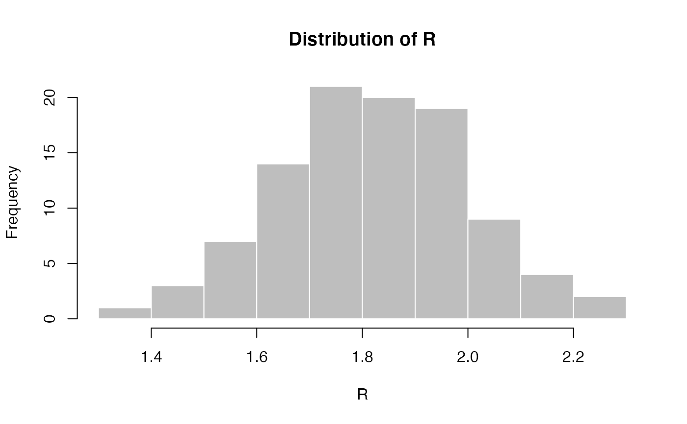
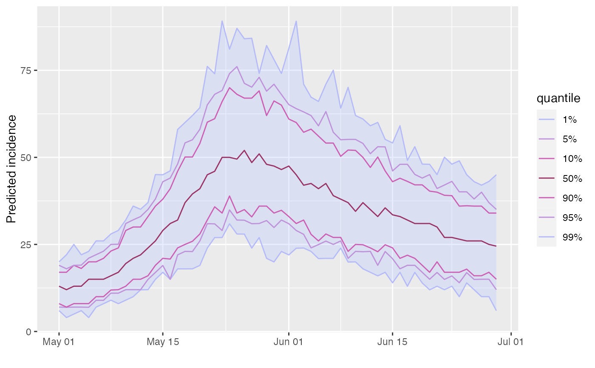

This function simulates future incidence based on past incidence data, a selection of plausible reproduction numbers (R), and the distribution of the serial interval (time from primary onset to secondary onset).
project( x, R, si, n_sim = 100, n_days = 7, R_fix_within = FALSE, model = c("poisson", "negbin"), size = 0.03, time_change = NULL )
| x | An |
|---|---|
| R | A vector of numbers representing plausible reproduction numbers; for instance, these can be samples from a posterior distribution using the `earlyR` or `EpiEstim` packages. If `time_change` is provided, then it must be a `vector` (for fixed values of R per time window) or a `list` of vectors (for separate distributions of R per time window), with one element more than the number of dates in `time_change`. |
| si | A function computing the serial interval, or a `numeric` vector
providing its mass function, starting a day 1, so that si[i] is the PMF for
serial interval of `i`. The model implicitly assumes that `si[0] = 0`. For
functions, we strongly recommend using the RECON package |
| n_sim | The number of epicurves to simulate. Defaults to 100. |
| n_days | The number of days to run simulations for. Defaults to 14. |
| R_fix_within | A logical indicating if R should be fixed within
simulations (but still varying across simulations). If |
| model | Distribution to be used for projections. Must be one of "poisson" or "negbin" (negative binomial process). Defaults to poisson |
| size | size parameter of negative binomial distribition. Ignored if model is poisson |
| time_change | an optional vector of times at which the simulations should use a different sample of reproduction numbers, provided in days into the simulation (so that day '1' is the first day after the input `incidence` object); if provided, `n` dates in `time_change` will produce `n+1` time windows, in which case `R` should be a list of vectors of `n+1` `R` values, one per each time window. |
The decision to fix R values within simulations
(R_fix_within) reflects two alternative views of the uncertainty
associated with R. When drawing R values at random from the provided
sample, (R_fix_within set to FALSE), it is assumed that R
varies naturally, and can be treated as a random variable with a given
distribution. When fixing values within simulations (R_fix_within
set to TRUE), R is treated as a fixed parameter, and the uncertainty
is merely a consequence of the estimation of R. In other words, the first
view is rather Bayesian, while the second is more frequentist.
Pierre Nouvellet (original model), Thibaut Jombart (bulk of the code), Sangeeta Bhatia (Negative Binomial model), Stephane Ghozzi (bug fixes time varying R)
## example using simulated Ebola outbreak if (require(outbreaks) && require(distcrete) && require(incidence) && require(magrittr)) { si <- distcrete("gamma", interval = 1L, shape = 2.4, scale = 4.7, w = 0.5) i <- incidence(ebola_sim$linelist$date_of_onset) plot(i) ## projections after the first 100 days, over 60 days, fixed R to 2.1 set.seed(1) proj_1 <- project(x = i[1:100], R = 2.1, si = si, n_days = 60) plot(proj_1) ## add projections to incidence plot plot(i[1:160]) %>% add_projections(proj_1) ## projections after the first 100 days, over 60 days, ## using a sample of R set.seed(1) R <- rnorm(100, 1.8, 0.2) hist(R, col = "grey", border = "white", main = "Distribution of R") proj_2 <- project(x = i[1:100], R = R, si = si, n_days = 60) ## add projections to incidence plot plot(i[1:160]) %>% add_projections(proj_2) ## same with R constant per simulation (more variability) set.seed(1) proj_3 <- project(x = i[1:100], R = R, si = si, n_days = 60, R_fix_within = TRUE) ## add projections to incidence plot plot(i[1:160]) %>% add_projections(proj_3) ## time-varying R, 2 periods, R is 2.1 then 0.5 set.seed(1) proj_4 <- project(i, R = c(2.1, 0.5), si = si, n_days = 60, time_change = 40, n_sim = 100) plot(proj_4) ## time-varying R, 2 periods, separate distributions of R for each period set.seed(1) R_period_1 <- runif(100, min = 1.1, max = 3) R_period_2 <- runif(100, min = 0.6, max = .9) proj_5 <- project(i, R = list(R_period_1, R_period_2), si = si, n_days = 60, time_change = 20, n_sim = 100) plot(proj_5) }#> #>#> #>#> #>